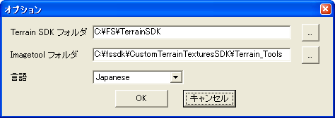

オプションニュー

- Terrain SDK フォルダ : FS2000 Terrain SDK に含まれるプログラム類(resample.exe, tmf2bgl.exe など)が格納されているフォルダを指定します。
Custom Terrain SDK ではありません！ FS2000 Terrain SDK です！！
- Imagetool フォルダ : Custom Terrain Textures SDK の Imagetool.exe が格納されているパスを
指定します。
- 言語 : Photo Scenery Maker が表示に使用する言語を設定します。